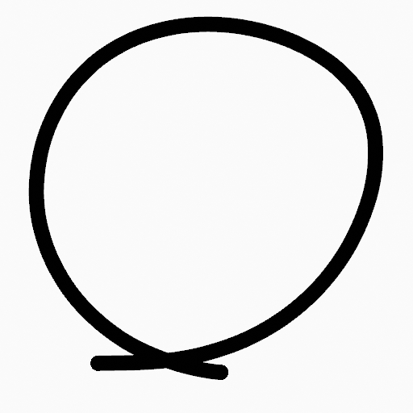
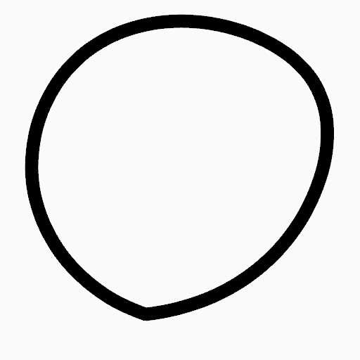
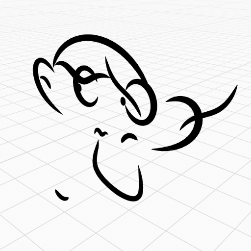
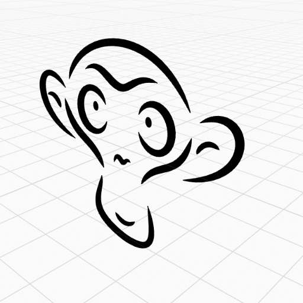

Stroke Menu¶
Reference
| Mode: | Edit Mode |
|---|---|
| Menu: | Strokes |
This page covers many of the tools in the Strokes menu. These are tools that work primarily on strokes, however, some also work with point selections.
Transform¶
Strokes can be edited by transforming the locations of points.
Translation, Rotation, Scale¶
Reference
| Mode: | Edit Mode |
|---|---|
| Panel: | Toolbar ‣ Tools ‣ Transform |
| Menu: | Stroke ‣ Transform ‣ Move, Rotate, Scale, … |
| Hotkey: | G, R, S |
Like other elements in Blender, points and strokes can be moved G, rotated R or scaled S as described in the Basic Transformations section. When in Edit Mode, Proportional Editing is also available for the transformation actions.
Transform Snapping¶
Basic move, rotate and scale transformations for selected points/strokes. See Move, Rotate, Scale Basics for more information.
Tools¶
Reference
| Mode: | Edit Mode |
|---|---|
| Menu: | Strokes ‣ Transform |
| Panel: | Toolbar ‣ Tools ‣ Stroke Tools |
The Bend, Shear, To Sphere, Extrude and Shrink fatten transform tools are described in the Editing tool section.
Mirror¶
Reference
| Mode: | Edit Mode |
|---|---|
| Hotkey: | Ctrl-M |
The Mirror tool is also available, behaving exactly the same as with mesh vertices.
Snap¶
Reference
| Mode: | Edit Mode |
|---|---|
| Menu: | Strokes ‣ Snap |
| Hotkey: | Shift-S |
Mesh snapping also works with Grease Pencil components.
Animation¶
Reference
| Mode: | Edit Mode, Draw Mode |
|---|---|
| Menu: | Strokes ‣ Animation, Strokes ‣ Interpolation |
The animations and stroke interpolation tools are described in the Animation section.
Extrude Points¶
Reference
| Mode: | Edit Mode |
|---|---|
| Panel: | Toolbar ‣ Tools ‣ Stroke Tools ‣ Extrude |
| Hotkey: | E |
Extrudes points by duplicating the selected points, which then can be moved. The new points stay connected with the original points of the edit line.
Note
Since Grease Pencil strokes can only have one start an end point, a new stroke will be created when extrude intermediate points in the strokes.
Duplicating¶
Duplicate¶
Reference
| Mode: | Edit Mode |
|---|---|
| Menu: | Stroke ‣ Duplicate |
| Hotkey: | Shift-D |
Duplicates the selected elements, without creating any connections with the rest of the strokes (unlike Extrude, for example), and places the duplicate at the location of the original elements.
Copy¶
Reference
| Mode: | Edit Mode |
|---|---|
| Menu: | Stroke ‣ Copy |
| Hotkey: | Ctrl-C |
Copy the selected points/strokes to the clipboard.
Paste¶
Reference
| Mode: | Edit Mode |
|---|---|
| Menu: | Stroke ‣ Paste, Stroke ‣ Paste & Merge |
| Hotkey: | Ctrl-V |
- Type
- Copy
- Paste the points/strokes copied from the clipboard.
- Merge
- Paste the points/strokes copied from the clipboard into the active layer.
Subdividing and Smoothing¶
Smooth¶
Reference
| Mode: | Edit Mode |
|---|---|
| Menu: | Stroke ‣ Smooth |
Softens strokes by reducing the differences in the locations of the points along the line, while trying to maintain similar values that make the line fluid and smoother.
- Repeat
- The number of times to repeat the procedure.
- Factor
- The amount of the smoothness to apply.
- Selected points
- When enabled, limits the effect to only the selected points within the stroke.
- Position
- When enabled, the operator affect the points location.
- Thickness
- When enabled, the operator affect the points thickness.
- Strength
- When enabled, the operator affect the points strength (alpha).
- UVs
- When enabled, the operator affect the UV rotation on the points.
Subdivide¶
Reference
| Mode: | Edit Mode |
|---|---|
| Menu: | Stroke ‣ Subdivide |
Subdivides the strokes by inserting points between the selected points.
- Number of Cuts
- The number of subdivisions to perform.
- Smooth
- The amount of the smoothness on subdivided points.
- Repeat
- Number of times to repeat the procedure.
- Selected points
- When enabled, limits the effect to only the selected points within the stroke.
- Position
- When enabled, the operator affect the points location.
- Thickness
- When enabled, the operator affect the points thickness.
- Strength
- When enabled, the operator affect the points strength (alpha).
- UVs
- When enabled, the operator affect the UV rotation on the points.
Simplify¶
Reference
| Mode: | Edit Mode |
|---|---|
| Menu: | Stroke ‣ Simplify |
Reduce the amount of points in the strokes.
- Fixed
Deletes alternated points in the strokes, except the start and end points.
- Steps
- The number of times to repeat the procedure.
- Adaptive
Uses the RDP algorithm (Ramer-Douglas-Peucker algorithm) for points deletion. The algorithm tries to obtain a similar line shape with fewer points.
- Factor
- Controls the amount of recursively simplifications applied by the algorithm.
Separating¶
Trim¶
Reference
| Mode: | Edit Mode |
|---|---|
| Menu: | Stroke ‣ Trim |
Trims selected stroke to first loop or intersection.

Original stroke. |

Result of trim operation. |
{kind=link}
{kind=link}
Separate¶
Reference
| Mode: | Edit Mode |
|---|---|
| Menu: | Stroke ‣ Separate |
| Hotkey: | P |
Separate the selected elements into a new Grease Pencil object.
- Selected Points
- Separate the selected points into a new Grease Pencil object.
- Selected Strokes
- Separate the selected strokes into a new Grease Pencil object. If one point of a stroke is selected, the entire stroke will be separated.
- Active Layer
- Separate all the strokes in the active layer into a new Grease Pencil object. See 2D Layers for more information.
Split¶
Reference
| Mode: | Edit Mode |
|---|---|
| Menu: | Stroke ‣ Split |
| Hotkey: | V |
Splits (disconnects) the selected points from the rest of the stroke. The separated points are left exactly at the same position as the original points but they belong to a new stroke.
Merging¶
Merge¶
Reference
| Mode: | Edit Mode |
|---|---|
| Menu: | Stroke ‣ Merge |
Combine all selected points into a unique stroke. All the selected points will be connected by new edit lines when needed to create the new stroke.
Join¶
Reference
| Mode: | Edit Mode |
|---|---|
| Menu: | Stroke ‣ Join ‣ Join, Join and copy |
| Hotkey: | Ctrl-J, Shift-Ctrl-J |
Join two or more strokes into a single one.
- Type
- Join Ctrl-J
- Join selected strokes by connecting points.
- Join and copy Shift-Ctrl-J
- Join selected strokes by connecting points in a new stroke.
- Leave Gaps
- When enabled, do not use geometry to connect the strokes.
Close¶
Reference
| Mode: | Edit Mode |
|---|---|
| Menu: | Stroke ‣ Close |
| Hotkey: | F |
Close or open strokes by connecting the last and first point.
- Type
- Close all
- Close all open selected strokes.
- Open all
- Open all closed selected strokes.
- Toggle
- Close or Open selected strokes as required.
- Create geometry
- When enabled, points are added for closing the strokes. If disabled, the operator act the same as Toggle Cyclic.
Flip Direction¶
Reference
| Mode: | Edit Mode |
|---|---|
| Menu: | Stroke ‣ Flip Direction |
Reverse the direction of the points in the selected strokes (i.e. the start point will become the end one, and vice versa).
Layer and Materials¶
Move to Layer¶
Reference
| Mode: | Edit Mode |
|---|---|
| Menu: | Stroke ‣ Move to Layer |
| Hotkey: | M |
A pop-up menu to move the stroke to a different layer. You can choose the layer to move the selected strokes to from a list of layers of the current Grease Pencil Object. You can also add a new layer to move the selected stroke to.
Assign Material¶
Reference
| Mode: | Edit Mode |
|---|---|
| Menu: | Stroke ‣ Assign Material |
Changes the material linked to the selected stroke. You can choose the name of the material to be used by the selected stroke from a list of material of the current Grease Pencil Object.
Arrange Strokes¶
Reference
| Mode: | Edit Mode |
|---|---|
| Menu: | Stroke ‣ Arrange Strokes |
Change the drawing order of the strokes in the 2D layer.
- Bring Forward
- Moves the selected points/strokes upper the next one in the drawing order.
- Send Backward
- Moves the selected points/strokes below the previous one in the drawing order.
- Bring to Front
- Moves to the top the selected points/strokes.
- Send to Back
- Moves to the bottom the selected points/strokes.
Toggle Cyclic¶
Reference
| Mode: | Edit Mode |
|---|---|
| Menu: | Stroke ‣ Toggle Cyclic |
Toggles between an open stroke and closed stroke (cyclic).
- Type
- Close all
- Close all open selected strokes.
- Open all
- Open all closed selected strokes.
- Toggle
- Close or Open selected strokes as required.
- Create geometry
- When enabled, points are added for closing the strokes like when using the Close tool. If disabled, the stroke is close without any actual geometry.
Toggle Caps¶
Reference
| Mode: | Edit Mode |
|---|---|
| Menu: | Stroke ‣ Toggle Caps |
Toggle ending cap styles of the stroke.
- Default
- Sets stroke start and end points to rounded (default).
- Both
- Toggle stroke start and end points caps to flat or rounded.
- Start
- Toggle stroke start point cap to flat or rounded.
- End
- Toggle stroke end point cap to flat or rounded.
{kind=link}
{kind=link}
{kind=link}
Cleaning Up¶
These tools help to cleanup degenerate geometry on the strokes.
Loose Points¶
Reference
| Mode: | Edit Mode |
|---|---|
| Menu: | Stroke ‣ Clean Up ‣ Loose Points |
Removes disconnected points.
Boundary Strokes¶
Reference
| Mode: | Edit Mode |
|---|---|
| Menu: | Stroke ‣ Clean Up ‣ Boundary Strokes, Boundary Strokes All Frames |
Removes boundary strokes used by the Fill tool. See Fill tool for more information.
- Mode
- Active Frame Only
- Removes boundary strokes from the current frame.
- All frames
- Removes boundary strokes from all frames.
Reproject Strokes¶
Reference
| Mode: | Edit Mode |
|---|---|
| Menu: | Stroke ‣ Clean Up ‣ Reproject Strokes |
Sometimes you may have drawn strokes unintentionally in different locations in the 3D space but they look right from a certain plane or from the camera view. You can use Reproject Strokes to flatten all the selected strokes from a certain viewpoint.
- Front
- Reproject selected strokes onto the front plane (XZ).
- Side
- Reproject selected strokes onto the side plane (YZ).
- Top
- Reproject selected strokes onto the top plane (XY).
- View
- Reproject selected strokes onto the current view.
- Surface
- Reproject selected strokes onto the mesh surfaces.
- Cursor
- Reproject selected strokes onto 3D cursor rotation.

Original drawing in the 3D view. |

Strokes reprojected onto the front plane to fix strokes misalignment. |
{kind=link}
{kind=link}
{kind=link}
Deleting¶
Reference
| Mode: | Edit Mode |
|---|---|
| Menu: | Stroke ‣ Delete |
| Hotkey: | X, Delete, Ctrl-X |
Options for the Erase pop-up menu:
- Points
- Deletes the selected points. When only one point remains, there is no more visible stroke, and when all points are deleted, the stroke itself is deleted.
- Strokes
- Deletes all the strokes that selected points belongs to.
- Frames
- Deletes all the strokes at the current frame and in the current layer/channel.
- Dissolve Ctrl-X
- Deletes the selected points without splitting the stroke. The remaining points in the strokes stay connected.
- Dissolve between Ctrl-X
- Deletes all the points between the selected points without splitting the stroke. The remaining points in the strokes stay connected.
- Dissolve Unselect Ctrl-X
- Deletes all the points that are not selected in the stroke without splitting the stroke. The remaining points in the strokes stay connected.
- Delete All Active Frames
- Deletes all the strokes at the current frame in all layers/channels.